ClueBoard assetbank
Gegenereerd door assets/tools/build_assets.py. Open via een lokale
webserver, niet via file:// — anders laden de tekeningen niet.
Rollen 6
noble
villagerknight
guard
monk
servant Interface 43
back
badge
blocked
box
check
chevron
clipboard
clock
compass
cross
culprit
dagger
dossier
download
droplet
eye
eye-off
file
globe
grid
help
home
list
lock
moon
note
pawn
pencil
people
person
pin
play
plus
scissorssettings
skull
sparkle
sun
swap
trash
undo
upload
warning Objecten 35
barrel
bed
bench
boar
boat
box
carpet
catapult
chair
cow
crate
door
easel
gate
horse
house
loom
pig
plant
puddle
rubble
sack
shelf
shrub
statue
stones
table
treasure
tree
vase
watermill
weapon-chest
well
window
wolf Reserve 7
mirror
paint
candle
lamp
fire
anvil
hay Tekeningen 83
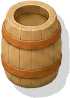
barrelbarrel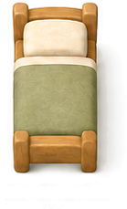
bed-1x2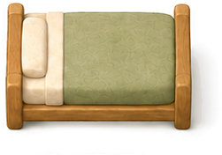
bed-2x1bed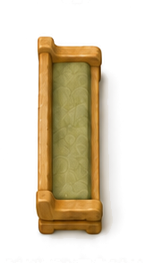
bench-1x2bench-2x1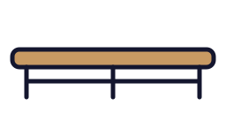
bench-2x1bench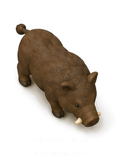
boarboar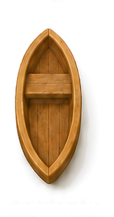
boat-1x2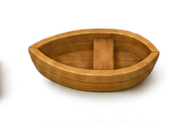
boat-2x1boat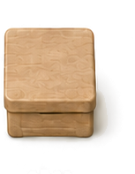
boxboxcarpet-1x2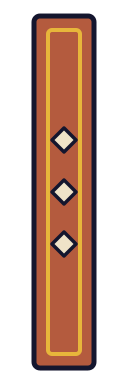
carpet-1x3carpet-2x1carpet-3x1carpetcatapult-1x2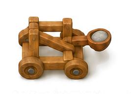
catapult-2x1catapult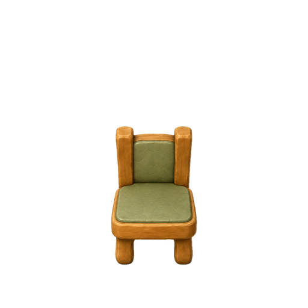
chairchair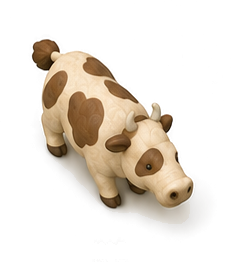
cowcow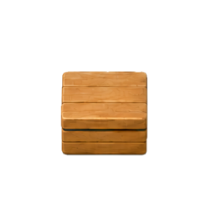
cratecratedoor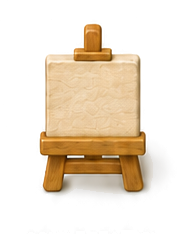
easeleaselgate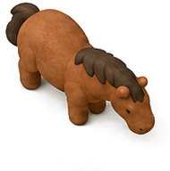
horsehorse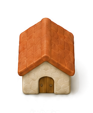
househouse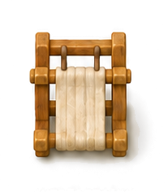
loomloom medi
medi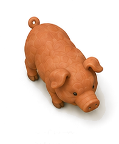
pigpig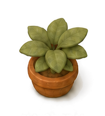
plantplant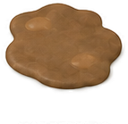
puddlepuddle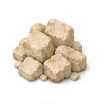
rubblerubble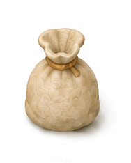
sacksack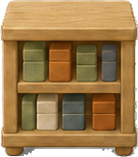
shelfshelf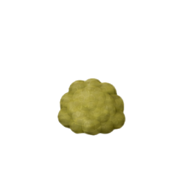
shrubshrub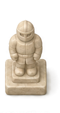
statuestatue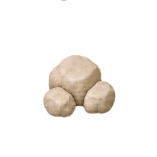
stonesstones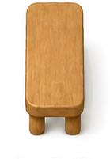
table-1x2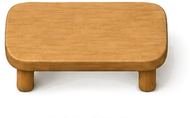
table-2x1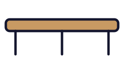
table-2x1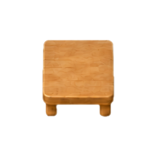
table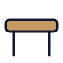
table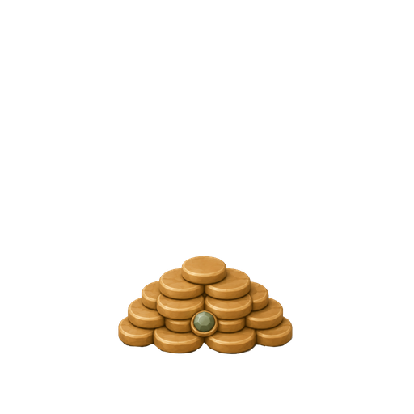
treasuretreasure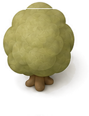
treetree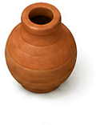
vasevasewatermill-1x2watermill-2x1watermill-2x1watermillweapon-chestweapon-chest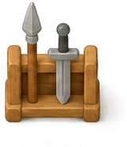
weapon-rackwell-2x2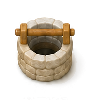
wellwellwindow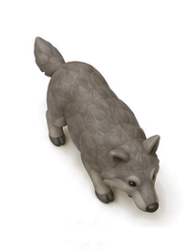
wolfwolf